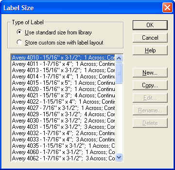
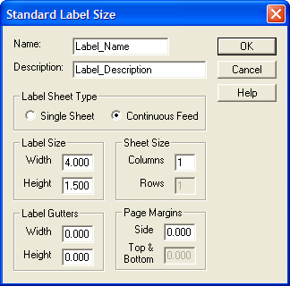
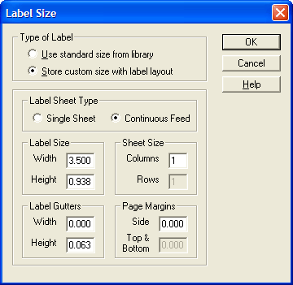

Choosing the Label Size
Change the Label size using the Label Size list. This dialog box lets you choose a pre-defined size, or create your own size. Alpha Anywhere's Label Library contains dozens of popular Label size definitions. You can choose your own Label size or add one to the library.
If you add a new size to the library, it will appear in the list of pre-defined choices whenever you create a new Label. Additionally, the Label definition you create becomes available to any other network user, provided you both have the same Shared Path.
You can also choose not to use the Label Size list, and save the size criteria in the Label itself. This method is appropriate if you do not wish to use the size again.
To make a selection, click either the Use standard size from library or Store custom size with Label layout radio buttons.
Using the Label Library
When you click the Use standard size from library radio button, a list of pre-defined sizes appears.

Label Size Dialog Box
To choose a Label from the list, highlight the size you want, and then click OK.
To add a new size to this list:
Click the size that most closely matches the size you want to define
Click the New... button.
When the Standard Label Size dialog box appears, enter a Name and Description.

Set the other size properties, including the number of Rows and Columns that appear on each sheet of labels, the Label Size, the size of the Label Gutters, and the size of the Page Margins.
Saving the Label Size in the Label Layout (Instead of the Library)
To define a custom size:

Creating a Custom Label Size
Click the Store custom size with Label layout radio button.
Define the layout properties.
Label Properties
|
Property |
Description |
|
Label Sheet Type |
If your Labels are on individual sheets (typically used in laser printers), check the Single Sheets radio button. If the sheets of Labels are connected to together in a continuous arrangement (also known as fanfold or tractor-feed), the type typically used by dot matrix printers, click the Continuous Feed radio button. |
|
Label Size |
Use the Width and Height boxes to specify the exact size of the Labels. This information is often printed on the labels' package, but it can also be determined with a ruler. |
|
Sheet Size |
In the Columns box, enter the number of Labels per row. If you are using single sheets of Labels, in the Rows box enter the number of rows per page. |
|
Label Gutters |
In the Width and Height boxes, enter the amount of space that exists between each Label. |
|
Page Margins |
In the Side box enter the amount of space that exists (from left to right) between the edge of the page and the first Label on the page. If you are using single sheets, in the Top & Bottom box enter the space that exists (from top to bottom) between the edge of the page and the first Label on the page. |